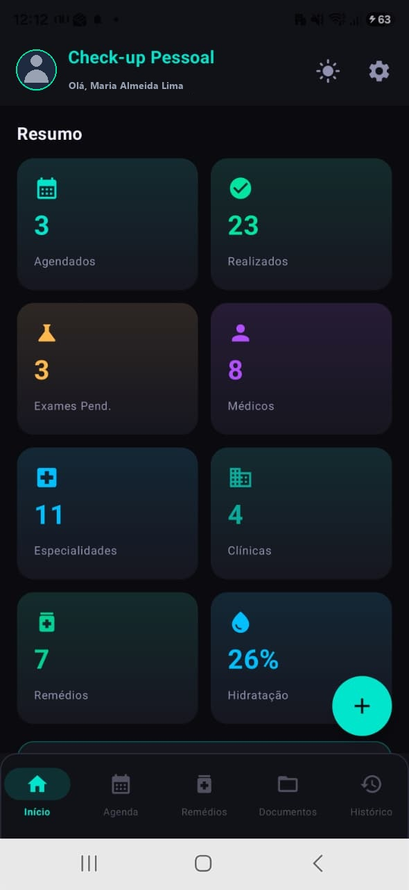
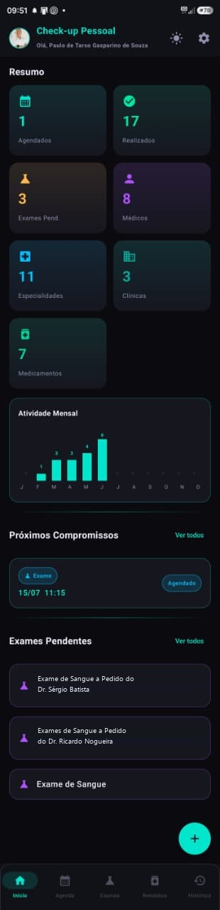
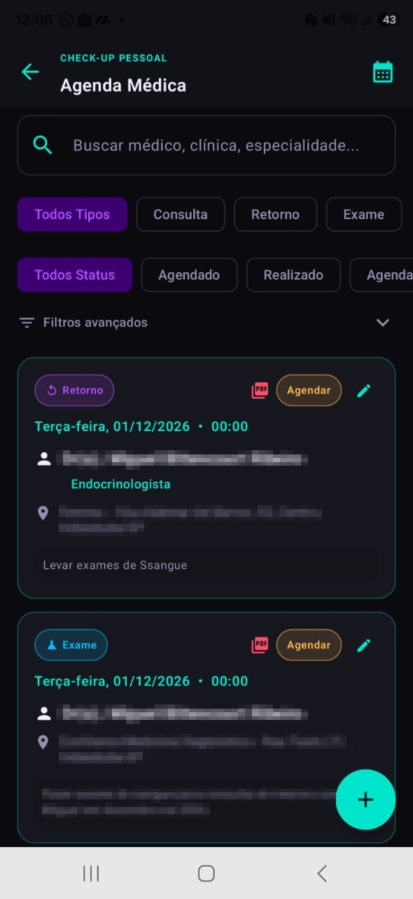
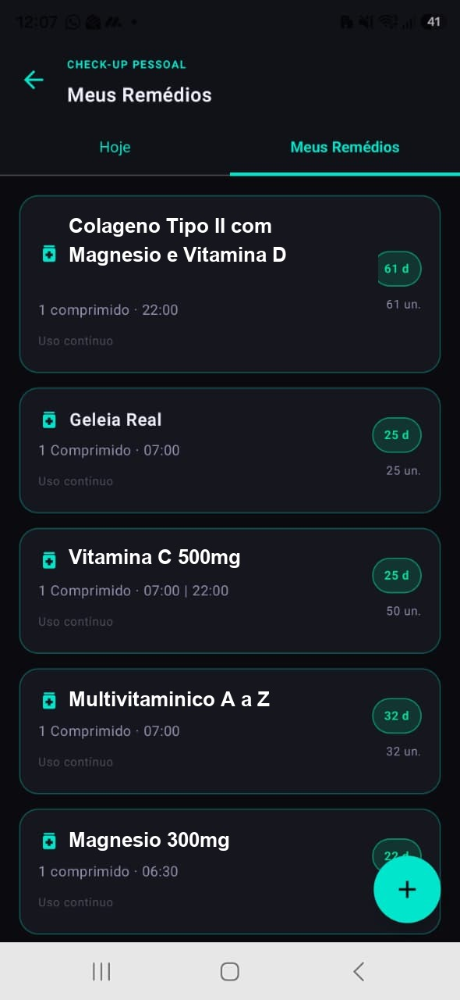
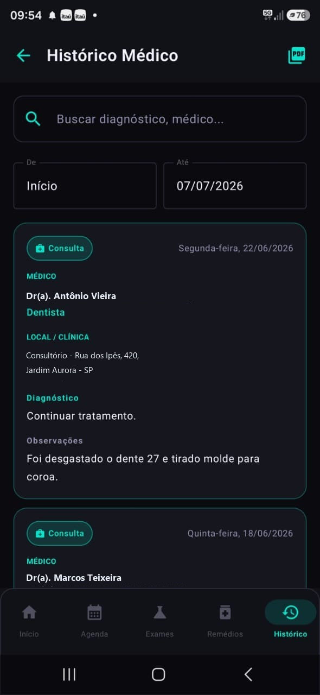
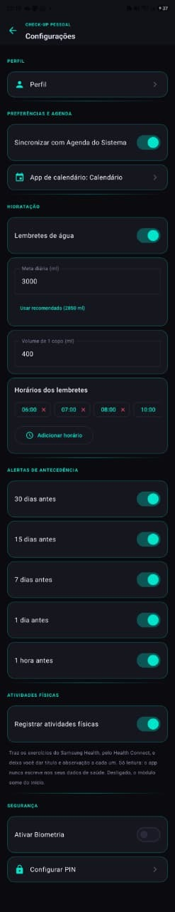

Android e Windows · 100% gratuito
Consultas, exames, receitas, documentos, remédios e até a água do dia — tudo registrado, com lembretes na hora certa. Funciona sem internet e seus dados ficam só no seu aparelho.
✓ Sem cadastro obrigatório ✓ Sem anúncios ✓ Sem mensalidade

Por que existe
Pedidos de exame, receitas, resultados, cartão do convênio, datas de retorno. Tudo espalhado entre gavetas, fotos no celular e a memória.
Recursos
Seis módulos que cobrem a rotina inteira de acompanhamento da sua saúde.
Consultas, retornos e exames em uma lista só. Filtre por médico, especialidade, clínica ou período, e receba alertas com 30, 15, 7 e 1 dia de antecedência.
Cadastre a dosagem e os horários e receba o alarme na hora de tomar. O app acompanha o estoque e avisa quando está na hora de comprar mais.
O app calcula sua meta diária de água pelo seu peso e envia lembretes nos horários que você escolher. Registre cada copo com um toque e acompanhe os últimos 7 dias em um gráfico.
Todo atendimento realizado fica registrado com médico, local, diagnóstico e observações. Busque por texto e exporte em PDF para levar na próxima consulta.
Fotografe ou anexe pedidos, resultados, receitas e carteirinha do convênio. Cada documento fica vinculado à consulta ou ao exame correspondente.
Gere um backup completo e restaure no celular ou no computador. Os dados circulam entre Android e Windows sem você digitar nada de novo.
Bloqueio por PIN ou biometria. Nenhum dado de saúde sai do seu aparelho — não existe servidor, nuvem nossa nem conta obrigatória.
Conheça o app
Telas reais do CheckupPessoal para Android.

Início

Agenda Médica

Meus Remédios

Histórico Médico

Configurações
Resumo
O CheckupPessoal guarda tudo no banco de dados do próprio aparelho. Não existe servidor, não existe sincronização automática, não existe conta obrigatória. O único jeito de os seus dados saírem do aparelho é você gerar um backup e escolher para onde enviá-lo.
Download
Sem assinatura, sem período de teste, sem anúncios.
Instalando o APK: ao abrir o arquivo, o Android pede permissão para instalar de fontes desconhecidas. Toque em Configurações → Permitir desta fonte e volte.
Play Store: o app está em fase de teste interno, aberto apenas a quem se cadastra no programa de testadores. Enquanto isso, o APK acima é a forma de instalar.
Verificação de integridade — SHA-256 do arquivo:f81ef7f65d270f423c20295fb30ac0d183af56a8b68250fc41834956a657efd9
Aviso do Windows: por ser um instalador independente, o SmartScreen pode exibir um alerta. Clique em Mais informações → Executar assim mesmo.
Verificação de integridade — SHA-256 do arquivo:2901c2d52eebbb80f0cb0ae783b5a21dad66e75aad48f0886292cd4084df6473
Para conferir no Windows: certutil -hashfile CheckupPessoal-Windows.exe SHA256
Ajuda
Guias completos em PDF e a apresentação do app na AAFC TV.
Sua opinião
O app cresce a partir do uso real. Conte o que funcionou, o que atrapalhou e o que você gostaria de ver na próxima versão.
Perguntas frequentes
Sim. O app é gratuito nas duas plataformas, não tem anúncios, não tem versão paga e não tem compras dentro do aplicativo.
Não. Tudo fica gravado no banco de dados do próprio aparelho. Não existe servidor nem sincronização automática. Seus dados só saem do aparelho se você gerar um backup e escolher para onde enviá-lo.
Não. O app funciona 100% offline, inclusive os alarmes de remédio e os alertas de consulta.
Em Configurações → Gerar Backup, o app cria um arquivo único. Envie esse arquivo para o computador (Drive, e-mail, cabo) e use Restaurar Dados de Backup na versão Windows. Funciona também no sentido contrário.
Está em fase de teste interno. Você pode baixar o APK direto por este site agora, ou pedir acesso ao teste interno pelo programa de testadores.
Hoje o app é de uso individual por aparelho. O suporte a múltiplos perfis no mesmo aparelho — pensado para quem cuida do cônjuge ou dos pais — está no roteiro das próximas versões.
Sim. Você recebe alertas de consulta com 30, 15, 7 e 1 dia e 1 hora de antecedência (configurável), e alarmes de remédio nos horários que você cadastrar.
Ainda não. Hoje o CheckupPessoal está disponível para Android e Windows.
Leva menos de dois minutos para instalar e cadastrar a primeira consulta.